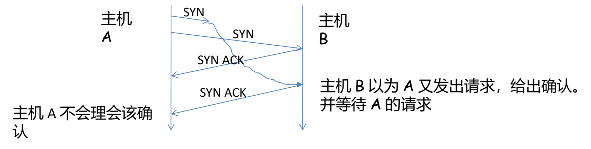
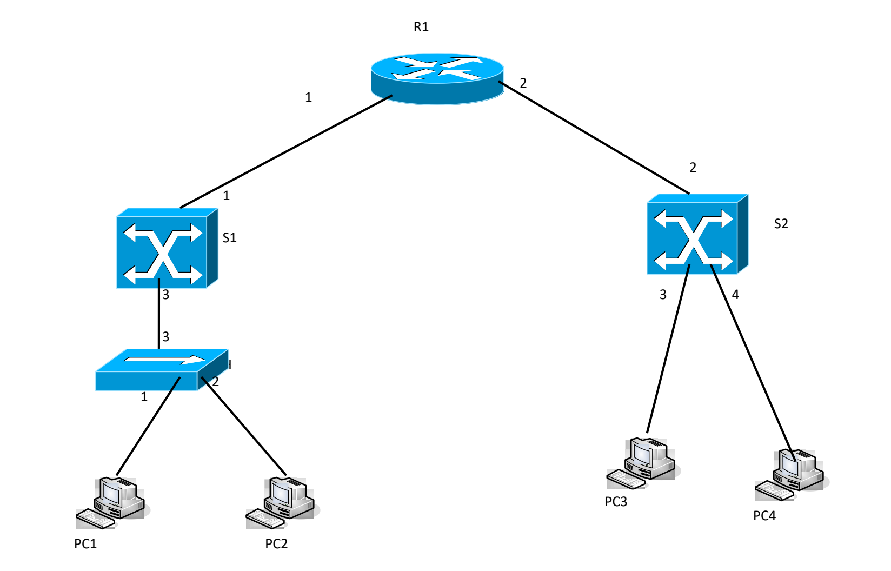
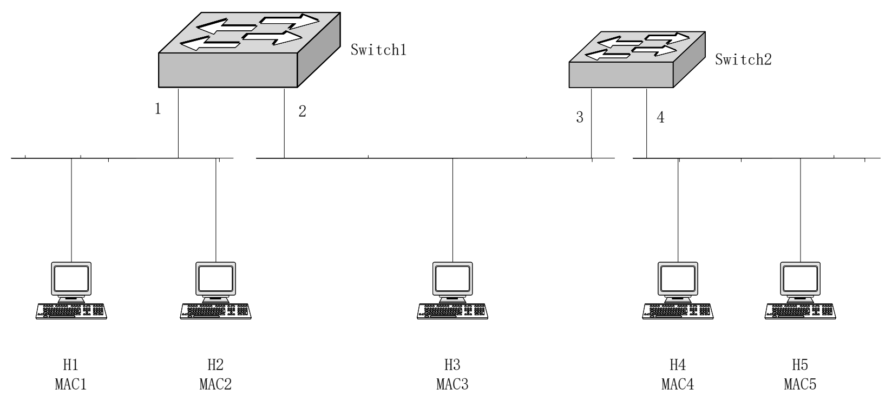
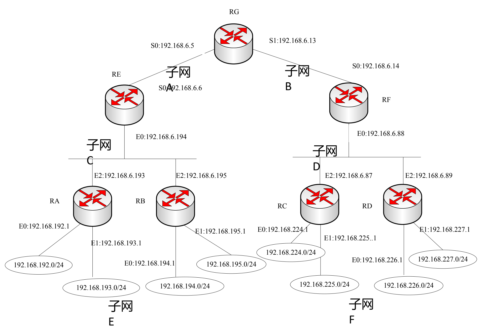

计算机通信与网络 · 期末复习题
填空（10 题）
填空 1分组交换的两种服务
题目
分组交换网提供了两种服务，即数据报服务和 ________。
参考答案
虚电路服务
填空 2面向无连接的运输层协议
题目
________ 是运输层协议，它可以为用户提供不可靠的、面向无连接的传输服务。
参考答案
UDP
填空 3IPv4 与 IPv6 的地址长度
题目
IP 地址长度在 IPv4 中为 32 比特，而在 IPv6 中则为 ________ 比特。
参考答案
128
填空 4因特网协议栈的五个层次
题目
因特网的协议栈由 5 个层次组成，从上到下依次是应用层、运输层、________、链路层和物理层。
参考答案
网络层
填空 5FTP 的两个连接
题目
使用 FTP 进行文件传输时，FTP 的客户和服务器进程之间要建立两个连接，即 ________ 和数据连接。
参考答案
控制连接
填空 6ARP 完成的地址转换
题目
ARP 主要用来实现从 IP 地址到 ________ 之间的转换。
参考答案
MAC 地址
填空 7路由器的交换结构
题目
路由器的交换结构可以通过经内存、经总线和经 ________ 来完成。
参考答案
交叉总线
填空 8多址访问协议的分类
题目
常见的多址访问协议包括信道划分协议、随机访问协议和 ________。
参考答案
轮流协议
填空 9报文时延的四个组成部分
题目
一个报文从网络的一端传送到另一端所经历的时延主要由传输时延、传播时延、处理时延和 ________ 四个部分组成。
参考答案
排队时延
填空 10链路层的职责
题目
在网络层次结构中，________ 层负责在两个相邻结点间的线路上无差错地传送以帧为单位的数据。
参考答案
链路
单项选择（17 题）
单选 1数据链路层的数据单位
题目
数据链路层中的数据单位是（ ）
- A. 数据报
- B. 字节
- C. 帧
- D. 分组
参考答案
C
单选 2网络层的四个重要协议
题目
Internet 的网络层含有四个重要的协议，分别为（ ）
- A. IP，ICMP，ARP，UDP
- B. TCP，ICMP，UDP，ARP
- C. IP，ICMP，RIP，OSPF
- D. UDP，IP，ICMP，RARP
参考答案
C
单选 3域名地址到 IP 地址的转换
题目
用于实现域名地址到 IP 地址转换的协议是（ ）
- A. DHCP
- B. ARP
- C. NAT
- D. DNS
参考答案
D
单选 4以铜质电话线为媒体的传输方式
题目
以铜质电话线为传输媒体的传输方式是（ ）
- A. HFC
- B. ADSL
- C. FDDI
- D. CDMA
参考答案
B
单选 5滑动窗口协议的主要用途
题目
滑动窗口协议主要用于进行（ ）
- A. 差错控制
- B. 流量控制
- C. 安全控制
- D. 拥塞控制
参考答案
B
单选 6SR 协议发送窗口中的帧
题目
SR 协议发送窗口中的帧是（ ）
- A. 已发送出去，而且确认了的帧
- B. 已发送出去，没有确认的帧
- C. 已发送出去，有的确认了，有的没有确认的帧
- D. 正在等待发送的帧
参考答案
C
单选 7IP 地址与域名的关系
题目
在 Internet 中，主机的 IP 地址与域名的关系是（ ）
- A. IP 地址是域名中部分信息的表示
- B. 域名是 IP 地址中部分信息的表示
- C. IP 地址和域名是等价的
- D. IP 地址和域名分别表达不同含义
参考答案
C
单选 8MAC 地址的存储位置
题目
MAC 地址通常存储在计算机的（ ）
- A. 内存中
- B. 网卡上
- C. 硬盘上
- D. 高速缓冲区中
参考答案
B
单选 9端口/MAC 地址映射表的建立
题目
以太网交换机中的端口/MAC 地址映射表（ ）
- A. 是由交换机的生产厂商建立的
- B. 是交换机在数据转发过程中通过学习动态建立的
- C. 是由网络管理员建立的
- D. 是由网络用户利用特殊的命令建立的
参考答案
B
单选 10第二层设备识别的地址
题目
传统的交换机作为第二层设备，只能识别（ ）地址并转发。
- A. IP
- B. 网络
- C. 逻辑
- D. MAC
参考答案
D
单选 11路由器互联多个局域网的协议要求
题目
在路由器互联的多个局域网中，通常要求每个局域网的（ ）
- A. 数据链路层协议和物理层协议必须相同。
- B. 数据链路层协议必须相同，而物理层协议可以不同。
- C. 数据链路层协议可以不同，而物理层协议必须相同。
- D. 数据链路层协议和物理层协议都可以不相同。
参考答案
D
单选 12HTTP 使用的传输协议与端口
题目
HTTP 协议是常用的应用层协议，它使用（ ）协议提供的服务，是使用（ ）端口进行服务识别。
- A. FTP，21
- B. UDP，21
- C. UDP，80
- D. TCP，80
参考答案
D
单选 13统一资源定位器
题目
Web 上每一个页都有一个独立的地址，这些地址称作统一资源定位器，即（ ）。
- A. URL
- B. WWW
- C. HTTP
- D. USL
参考答案
A
单选 14接收 E-mail 所用的协议
题目
请选择接收 E-mail 所用的网络协议：（ ）。
- A. POP3
- B. SMTP
- C. HTTP
- D. FTP
参考答案
A
单选 15网络接口卡实现的功能所属层次
题目
在多数情况下，网络接口卡实现的功能处于（ ）。
- A. 物理层协议和数据链路层协议
- B. 物理层协议和网络层协议
- C. 数据链路层协议
- D. 网络层协议
参考答案
A
单选 16GBN 发送窗口与还可发送的报文段数
题目
考虑 GBN 协议，假设发送窗口 W 的大小为 8。若在时刻 t 发送窗口起始位置位于序号 1，在发送完 4 号报文段后收到 2 号报文段的确认，发送方还可以连续发送报文段的个数为（ ）。
- A. 8
- B. 7
- C. 6
- D. 5
参考答案
C
单选 17TCP 确认号的取值
题目
假设主机 A 通过 TCP 连接向主机 B 连续发送二个 TCP 报文段，第一个报文段的序号为 100，第二个报文段序号为 110，假设第一个报文段丢失而第二个报文段到达 B。那么主机 B 发往主机 A 的确认报文中，确认号应该为下列选项中的（ ）。
- A. 100
- B. 110
- C. 101
- D. 111
参考答案
A
简答题（8 题）
简答 1Web 站点如何用 cookie 识别用户
题目
试述 Web 站点是如何利用 cookie 技术实现对用户的识别的。
参考答案
首先用户端浏览器需支持 cookie，Web 站点需维护一个 cookie 数据库。用户端浏览器产生一个 HTTP 请求报文到达 Web 站点后，服务器为用户创建一个 ID。该 ID 存入 cookie 数据库。然后 Web 站点的响应报文会包含一条：Set-cookie: ID。浏览器收到该响应报文后，会存放到 cookie 文件里。在后续的通信里，都会包含此 ID，服务器据此可以识别用户。
简答 2RIP 协议与 OSPF 协议的异同
题目
请比较 RIP 协议和 OSPF 协议之间的异同。
参考答案
| RIP | OSPF | |
|---|---|---|
| 协议类型 | IGP | IGP |
| 算法 | 距离－向量算法 | 链路－状态算法 |
| 交换信息范围 | 相邻路由器 | 自治系统或区域内路由器 |
| 交换信息内容 | 距离向量 | 链路状态 |
| 交换信息时机 | 距离向量发生变化 周期性发送距离向量 | 链路状态发生变化 周期性发送链路状态 |
| 收敛过程 | 较快 | 快 |
| 传输协议 | UDP | IP |
| 适用网络类型 | 小型网络 | 大型网络 |
| 衡量标准 | 跳数 | 可有多种度量标准 |
简答 3TCP 协议与 GBN 协议的比较
题目
请填写下表以比较 TCP 协议与 GBN 协议。
参考答案
| 序号 | 内容 | TCP | GBN |
|---|---|---|---|
| 1 | 是否采用流水线方式发送报文段 | 是 | 是 |
| 2 | 是否采用累积确认 | 是 | 是 |
| 3 | 报文段编号方式 | 按字节编号 | 按报文段编号 |
| 4 | 触发重传时机 | 超时 + 三个冗余 ACK | 超时 |
| 5 | 重传报文段个数 | TCP 只会重传报文段 n。甚至如果在报文段 n 超时前收到了对报文段 n+1 的确认，TCP 连报文段 n 都不会重传。 | GBN 在报文段 n 超时时，会重发从 n 开始所有未确认的报文段。 |
简答 4虚电路与数据报操作方式的比较
题目
试比较在通信子网中虚电路操作方式与数据报操作方式的差异和特点。（填入「是」、「否」）
参考答案
| 序号 | 内容 | 虚电路 | 数据报 |
|---|---|---|---|
| 1 | 发送数据前需建立连接 | 是 | 否 |
| 2 | 各分组经过路径相同 | 是 | 否 |
| 3 | 经每个节点需存贮转发 | 是 | 是 |
| 4 | 各分组按发送顺序到达接收方 | 是 | 否 |
| 5 | 每个数据分组需有目的地址 | 否 | 是 |
简答 5运输连接建立为什么要三次握手
题目
试用具体例子说明为什么在运输连接建立时要使用三次握手。说明如不这样做可能会出现什么情况。
参考答案
假设只需要二次握手，考虑这种情况：
- 主机 A 发出的请求报文段在某些网络节点滞留时间太长，主机 A 由于超时重发连接请求，B 收到重发的连接请求后给出同意连接的确认，主机 A 收到 B 的确认建立连接。数据传输完毕释放连接。
- 这时第一个请求才到达 B，主机 B 收到该失效的请求后，误以为 A 又发出请求，于是向主机 A 发出确认，同意建立连接。主机 A 则不会理睬该确认。主机 B 则苦等 A 的数据。三次握手就可以防止这种情况的发生。（主机 A 不会对主机 B 的确认发出确认，连接就建立不起来）

简答 6CSMA/CD 总线的传播延迟与传输延迟
题目
一个 CSMA/CD 以太网总线长度为 1000 米，带宽 100 Mbps，信号传播速度为 200 米/微秒，设两通信节点位于总线两端，试问：
- 两节点间的信号传播延迟是多少？
- 两节点间的信号最大传输延迟是多少？（假设最大帧长 1500 字节）
- 最长多久可以检测到二个帧有碰撞（2 × 传播延迟）
- 最短有效帧长是多少？（2 × 传播延迟 × 100 Mbps）
参考答案
传播延迟：1000 / 200 = 5 μs
传输延迟：1500 × 8 /（100 × 10⁶）= 120 μs
简答 7确认报文段丢失为何不一定引起重传
题目
在使用 TCP 协议传送数据时，如果有一个确认报文段丢失了，也不一定会引起与该确认报文段对应的数据的重传。请说明为什么？
参考答案
这是因为 TCP 协议采用累积确认方式。在未超时前，如果有后续数据报的确认报文到达发送方，发送方认为前面未确认的报文已被接收方收到。
简答 8GBN 发送窗口起始位置与 ACK 的取值范围
题目
考虑一个 GBN 协议，其发送窗口大小为 w，并假设序号空间足够大。假设在时刻 t，接收方期待的下一个有序分组的序号是 k。请回答以下问题：
- 在 t 时刻，发送方窗口的起始位置应该在什么范围？请简单说明原因。
- 在 t 时刻，在当前发送方收到的所有报文的 ACK 字段的可能的值应该在什么范围？请简单说明原因。
参考答案
（1）发送方窗口起始位置的范围
由于接收方期待的下一个分组序号是 k，说明接收方按序收到了 k−1 及以前的报文段并全部给出了确认。假设这些确认全部被发送方收到，则发送方的窗口位于【k，k+w−1】。假设这些确认全部没被发送方收到，则发送方窗口位于【k−w，k−1】。综合以上二种情况，发送方窗口大小为 w，且窗口起始位置在【k−w，k】范围内。
（2）发送方收到的 ACK 的取值范围
由于发送方窗口位置始终比收到的确认号大 1，因此发送方收到的 ACK 的范围为【k−w−1，k−1】。
问答题（4 题）
问答 1路由器 A 的 RIP 路由表更新
题目
假定网络中路由器 A 的路由表有如下的项目：
| 目的网络 | 距离 | 下一跳路由器 |
|---|---|---|
| N1 | 5 | B |
| N2 | 7 | C |
| N4 | 2 | C |
| N5 | 4 | D |
| N7 | 6 | E |
| N8 | 4 | F |
| N9 | 3 | C |
这时 A 收到邻居路由器 C 发来的 RIP 通告：
| 目的网络 | 距离 |
|---|---|
| N1 | 2 |
| N2 | 6 |
| N3 | 3 |
| N4 | 2 |
| N5 | 4 |
| N6 | 2 |
| N7 | 7 |
| N8 | 5 |
| N9 | 3 |
| N10 | 5 |
试求出路由器 A 更新后的路由表，答案以下列表格式给出。
参考答案
| 目的网络 | 距离 | 下一跳路由器 | 原因说明 |
|---|---|---|---|
| N1 | 3 | C | 从 C 走路径更短 |
| N2 | 7 | C | 最短路径不变 |
| N3 | 4 | C | 发现到 N3 的路径 |
| N4 | 3 | C | 最短路径重新计算为 3 |
| N5 | 4 | D | 从 D 走路经最短 |
| N6 | 3 | C | 发现到 N6 的路径 |
| N7 | 6 | E | 最短路径不变 |
| N8 | 4 | F | 最短路径不变 |
| N9 | 4 | C | 最短路径重新计算为 4 |
| N10 | 6 | C | 发现到 N10 的路径 |
问答 2ARP 解析次数与 IP 包的转发过程
题目
下图是某网络示意图，其中 R 是具有以太网端口的路由器。S1 和 S2 是以太网交换机。其中 R、S1 和 S2 的端口数目均有 3 个以上。H 是一 10M/100M 自适应集线器。PC1、PC2、PC3、PC4 是四台 PC 机，其中 PC1 和 PC2，PC3 和 PC4 分别处在同一子网内。各设备之间相连的端口号码分别示于连接线两端。PC1、PC2、PC3、PC4 只配备一块网卡，因此图中未标明端口号。请根据该图，解答如下各问题：

- 在整个网络初次启动后，若 PC1 与 PC3 通信，则需要进行几次 ARP 解析？简述其过程。
- 假设 PC1 向 PC3 发送一 IP 包。该包在最终到达目的主机之前，会经过网络上的一些中间结点，由这些结点进行转发。请根据该 IP 包在网络中各结点的转发过程，将 IP 包本身及封装该 IP 包的帧变化情况填写于下表：
IP 包所经过的主机或结点 源 IP 地址 目的 IP 地址 源 MAC 地址 目的 MAC 地址 PC1 H S1 R1
参考答案
（1）需要进行 2 次 ARP 解析
- 首先，PC1 在自己所在的子网内寻求获得 R1 的端口 1 的 MAC 地址。这时路由器会返回它的端口 1 的 MAC 地址；
- 从 PC1 发出的帧到达路由器 R 的 1 号端口后，路由器发出 ARP 请求，获取 PC3 的 MAC 地址。然后封帧将数据发往 PC3。
（2）IP 包与帧在各结点的变化
| IP 包所经过的主机或结点 | 源 IP 地址 | 目的 IP 地址 | 源 MAC 地址 | 目的 MAC 地址 |
|---|---|---|---|---|
| PC1 | PC1-IP | PC3-IP | PC1-MAC | R-1-MAC |
| H | PC1-IP | PC3-IP | PC1-MAC | R-1-MAC |
| S1 | PC1-IP | PC3-IP | PC1-MAC | R-1-MAC |
| R1 | PC1-IP | PC3-IP | R-2-MAC | PC3-MAC |
问答 3交换机转发表的学习与转发
题目
现有五个站点分别连接在三个局域网上，并且用二个交换机连接起来，如图 2 所示，每个交换机的端口号以及每个站点的 MAC 地址都标明在图上。一开始，二个交换机的转发表都是空的，以后按以下顺序有以下各站向其他各站发送了 MAC 帧，即：1）H1 发送给 H5；2）H3 发送给 H2；3）H4 发送给 H3；4）H2 发送给 H1。请将有关数据填入表 2 中。

参考答案
| 发送的帧 | 交换机 1 的转发表 | 交换机 2 的转发表 | 交换机 1 对该帧的处理 | 交换机 2 对该帧的处理 | ||
|---|---|---|---|---|---|---|
| 站地址 | 端口 | 站地址 | 端口 | |||
| H1 → H5 | MAC1 | 1 | MAC1 | 3 | 广播 写入转发表 | 广播 写入转发表 |
| H3 → H2 | MAC3 | 2 | MAC3 | 3 | 广播 写入转发表 | 广播 写入转发表 |
| H4 → H3 | MAC4 | 2 | MAC4 | 4 | 丢弃不转发 写入转发表 | 转发 写入转发表 |
| H2 → H1 | MAC2 | 1 | 丢弃不转发 写入转发表 | 接受不到该帧 | ||
问答 4子网地址聚合与路由器 RG 的转发表
题目
图一所示的拓扑图包含以下 6 个子网：
- 子网 A：包括路由器 RG 的接口 S0 和路由器 RE 的接口 S0。
- 子网 B：包括路由器 RG 的接口 S1 和路由器 RF 的接口 S0。
- 子网 C：包括路由器 RE 的接口 E0、RA 接口 E2 和 RB 接口 E2。
- 子网 D：包括路由器 RF 的接口 E0、RC 接口 E2 和 RD 接口 E2。
- 子网 E：包括路由器 RA 接口 E0、E1、RB 接口 E0、E1 及这四个接口连接的四个子网（椭圆所示）。
- 子网 F：包括路由器 RC 接口 E0、E1、RD 接口 E0、E1 及这四个接口连接的四个子网（椭圆所示）。
每个接口 IP 地址及椭圆所代表的子网网络地址如图所示，请回答下列问题：

- 利用 IP 地址聚合计算子网 A-F 的网络地址和掩码长度。
- 利用计算得到的子网 A-F 的网络地址设置路由器 RG 的转发表并填入下表中。
参考答案
（1）子网 A—F 的地址聚合
子网 A：
路由器 RG 的二个端口 IP 地址：
192.168.6.5 化成二进制为 192.168.6.00000101
192.168.6.6 化成二进制为 192.168.6.00000110
192.168.6.13 化成二进制为 192.168.6.00001101
192.168.6.14 化成二进制为 192.168.6.00001110
由于子网 A 和 B 只有二个接口，因此主机号可以用 2 位表示。所以 A 子网号为 192.168.6.4/30，填到表①，B 的子网号为 192.168.6.12/30，填到表②。
子网 C：
192.168.6.193、192.168.6.194、192.168.6.195 这三个 IP 必须位于一个子网；首先将他们变成二进制为：
192.168.6.193 192.168.6.11000001
192.168.6.194 192.168.6.11000010
192.168.6.195 192.168.6.11000011
但如果主机号只取 2 位，去掉 2 个特殊地址只能用于二台主机，因此主机号必须取 3 位。这三个 IP 被聚合为 192.168.6.192/29，填到表③。
子网 D：
192.168.6.87、192.168.6.88、192.168.6.89 这三个 IP 必须位于一个子网。
192.168.6.87 192.168.6.01010111
192.168.6.88 192.168.6.01011000
192.168.6.89 192.168.6.01011001
主机号必须取 4 位。这三个 IP 被聚合为 192.168.6.80/28，填到表④。
子网 E：
192.168.11000000.00000000 192.168.192.0
192.168.11000001.00000000 192.168.193.0
192.168.11000010.00000000 192.168.194.0
192.168.11000011.00000000 192.168.195.0
这四个子网可以聚合成 192.168.192.0/22，因此⑤填 192.168.192.0/22。
子网 F：
192.168.11100000.0 192.168.224.0/24
192.168.11100001.0 192.168.225.0/24
192.168.11100010.0 192.168.226.0/24
192.168.11100011.0 192.168.227.0/24
这四个子网可以聚合成 192.168.224.0/22，因此⑥填 192.168.224.0/22。
（2）路由器 RG 的转发表
| 目的网络/掩码长度 | 输出接口 |
|---|---|
| 192.168.6.4/30 ① | S0（直接连接） |
| 192.168.6.12/30 ② | S1（直接连接） |
| 192.168.6.192/29 ③ | S0 |
| 192.168.6.80/28 ④ | S1 |
| 192.168.192.0/22 ⑤ | S0 |
| 192.168.224.0/22 ⑥ | S1 |